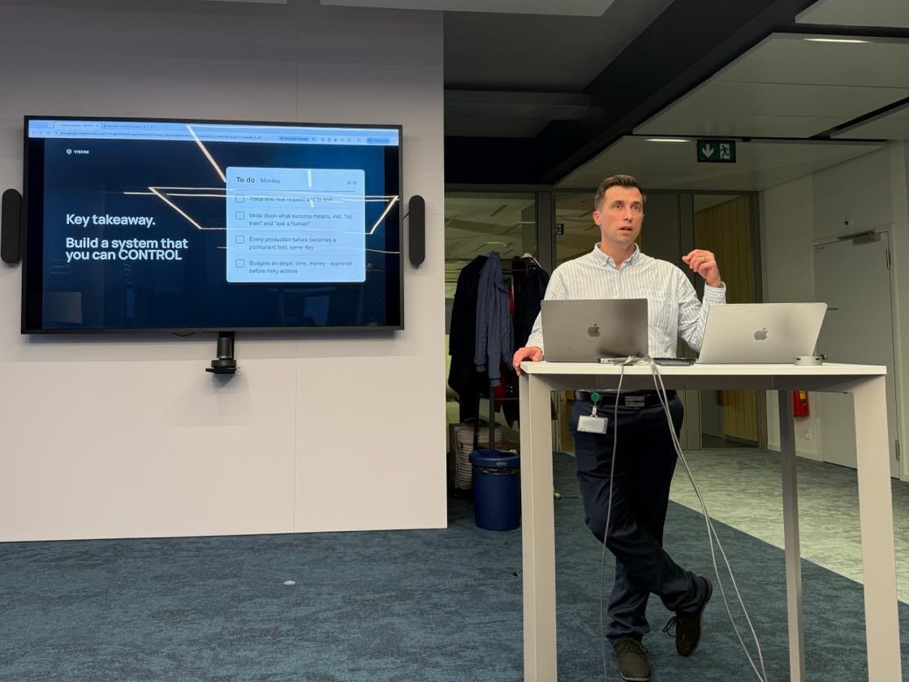

Talk · PyData Lausanne · 24 September 2026
AgentOps: the next layer after MLOps
Managing, deploying and monitoring AI systems when the thing you ship is a process, not a model.

Event page on Meetup ↗ · Slides on request: andy.bermond75@gmail.com
The abstract
LangChain's 2026 State of Agent Engineering survey put 57% of respondents with agents in production, 89% with observability in place, and only 52% running evals. Quality was the top barrier, named by nearly a third. Tracing has become table stakes; knowing whether the thing is any good has not. That gap is the interesting part.
The term AgentOps was coined in a 2024 paper out of CSIRO's Data61. Its argument: existing tooling mostly tracks LLM-specific metrics and prompt management, with little support for the artifacts that actually define an agent: its goals, its plans, its tools.
MLOps grew out of a similar observation: the model was never the hard part, the system around it was. Agents make the point again, louder. A model is a function: you version it, test it, roll it back. An agent is a process. It holds state, calls tools, spends money, retries, and occasionally decides something nobody specified.
The questions it works through
- What is the deployable unit now?
- What does a release look like when behaviour changes without the artifact changing?
- What do you monitor when there is no accuracy number?
- What does a rollback mean when the failure is a loop of tool calls rather than a bad prediction?
The closing slide: what to do on Monday
Key takeaway: build a system you can control. Four things to start with:
- Trace one real request end to end.
- Write down what success means, including “no train” and “ask a human”.
- Every production failure becomes a permanent test, the same day.
- Budgets on steps, time and money, with approval before risky actions.
The two notes on this site come from the same line of thinking: Tool calls OK is not the job done and Missing evidence stays missing.